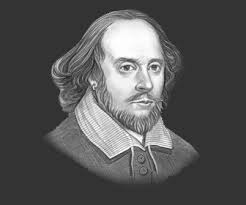

Joanne Rowling (born 31 July 1965), who writes under the pen names J. K. Rowling and Robert Galbraith, is a British novelist and screenwriter who wrote the Harry Potter fantasy series. The books have won multiple awards, and sold more than 400 million copies. They have become the best-selling book series in history and been the basis for a series of films, over which Rowling had overall approval on the scripts and was a producer on the final films in the series.
Daniel Defoe (1660 – 24 April 1731) born Daniel Foe, was an English trader, writer, journalist, pamphleteer, and spy. He is most famous for his novel Robinson Crusoe, which is second only to the Bible in its number of translations. Defoe is noted for being one of the earliest proponents of the novel, as he helped to popularize the form in Britain with others such as Aphra Behn and Samuel Richardson, and is among the founders of the English novel. He was a prolific and versatile writer, producing more than three hundred works– books, pamphlets, and journals – on diverse topics, including politics, crime, religion, marriage, psychology, and the supernatural. He was also a pioneer of economic journalism

William Shakespeare ( 26 April 1564 (baptized) – 23 April 1616) was an English poet, playwright, and actor, widely regarded as the greatest writer in the English language and the world's pre-eminent dramatist.[2] He is often called England's national poet, and the "Bard of Avon". His extant works, including collaborations, consist of approximately 38 plays, 154 sonnets, two long narrative poems, and a few other verses, some of uncertain authorship. His plays have been translated into every major living language and are performed more often than those of any other playwright.
Shakespeare was born and brought up in Stratford-upon-Avon, Warwickshire. At the age of 18, he married Anne Hathaway, with whom he had three children: Susanna, and twins Hamlet and Judith. Sometime between 1585 and 1592, he began a successful career in London as an actor, writer, and part-owner of a playing company called the Lord Chamberlain's Men, later known as the King's Men.